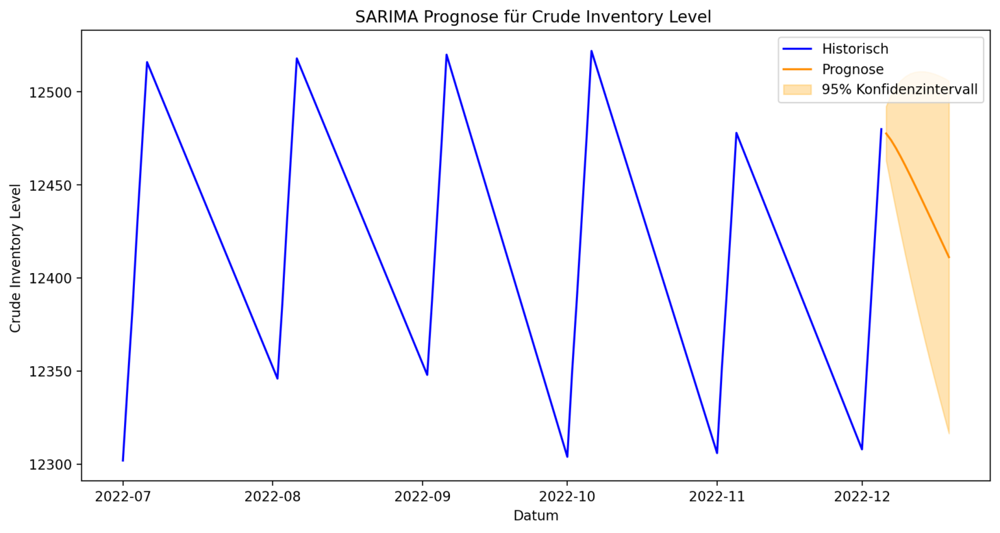
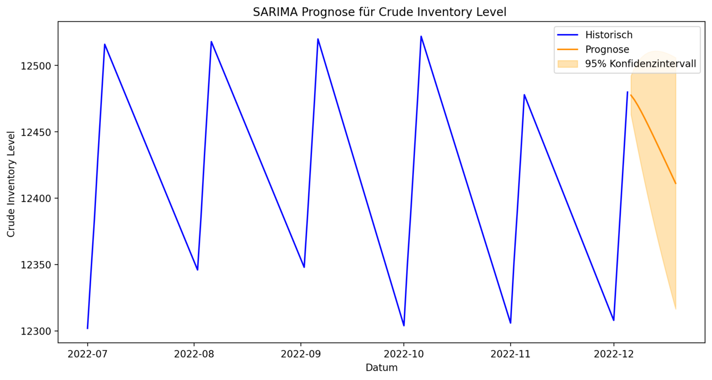

Use of Streamlit to convert raw data from CSV files into an interactive dashboard web application and provision
of a serverless user interface powered by Python code.
Dieses Projekt präsentiert ein modulares Streamlit-Dashboard, das dazu dient, rohe CSV-Daten in eine
vollständig interaktive Analyseoberfläche umzuwandeln. Benutzer können ihre eigenen Datensätze
hochladen und Daten mithilfe visueller Tools wie Balkendiagrammen, Kreisdiagrammen, Boxplots,
Histogrammen und Zeitreihenprognosen auf Basis von ARIMA-Modellen untersuchen.
Das Dashboard ist in separate Registerkarten für die Analyse kategorialer, numerischer und
Zeitreihendaten unterteilt und enthält eingebettete Erläuterungen zur Unterstützung der
Dateninterpretation.
Laden Sie die folgende CSV-Datei herunter, um das interaktive Dashboard auszuprobieren:
Um die Interaktivität und Benutzerkontrolle zu verbessern, enthält das Dashboard Filtertools,
zusammenfassende Statistiken und Schaltflächen zur dynamischen Generierung von Visualisierungen
und Modellausgaben. Es wurde entwickelt, um sowohl technische als auch nicht-technische Benutzer
durch zentrale Konzepte der Datenwissenschaft wie Verteilungsanalyse, Schiefe, Variabilität und
Prognosen zu führen.
Zu den wichtigsten Verbesserungen am Code gehören robustere Prognosen mit auto_arima zur Vermeidung
von Vorhersagen mit konstanten Werten sowie erweiterte statistische Diagnosen wie
Augmented Dickey-Fuller (ADF)-Stationaritätstests und Konfidenzintervalle. Außerdem wurde eine neue
Histogrammvisualisierung hinzugefügt, um numerische Verteilungen neben dem Boxplot besser darzustellen.
Zu den geplanten zukünftigen Verbesserungen gehören die Möglichkeit, Ergebnisse (Tabellen und
Diagramme) herunterzuladen, Modellparameter interaktiv auszuwählen und Prognosemodelle mithilfe von
Fehlermetriken wie MAE und RMSE nebeneinander zu vergleichen. Zusätzliche pädagogische Elemente wie
Code-Erklärungen und erweiterbare Logikabschnitte erhöhen den Wert dieses Dashboards für Lernzwecke
weiter.
Sehen Sie, wie Dashboards eine Excel-Datei in ein interaktives Dashboard verwandeln können:
Während diese App aufgrund ihrer Einfachheit und ihrer schnellen Prototyping-Fähigkeiten in Streamlit
erstellt wurde, wird auf der Seite auf Dash (Plotly) als flexiblere Alternative für produktionsreife
Anwendungen hingewiesen. Dash ermöglicht eine tiefere Anpassung des Layouts und der
Benutzerinteraktivität, erfordert jedoch eine komplexere Einrichtung und Callback-Logik. Streamlit
bleibt ideal für die Bereitstellung von leichtgewichtigen, datengesteuerten Dashboards mit minimalem
Aufwand.
Dieses Projekt zeigt, wie statistische Modellierung, Prognosen und explorative Analysen nahtlos in
einen einzigen visuellen Workflow integriert werden können – und damit die Lücke zwischen abstrakten
datenwissenschaftlichen Techniken und realen Business-Intelligence-Tools schließen.
Streamlit-Dashboards bieten eine intuitive und effiziente Möglichkeit, analytische Modelle in
interaktive Tools umzuwandeln, die die Entscheidungsfindung in der Praxis unterstützen. In
Unternehmens- und Verwaltungsumgebungen sind diese Dashboards besonders wertvoll für Fachleute, die
in den Bereichen Datenprognose, Logistik, Energiemodellierung und Personalplanung tätig sind –
Bereiche, die mit meinem Hintergrund und meinen angewandten Projekten übereinstimmen.
Durch die Umwandlung von Rohdatensätzen oder statistischen Ergebnissen in interaktive Diagramme,
Zusammenfassungen und Vorhersagemodelle ermöglicht Streamlit die Kommunikation technischer Ergebnisse
an nicht-technische Stakeholder. Dies ist besonders nützlich für Aufgaben wie Personalplanung,
Energiebedarfsprognosen und die Optimierung von Betriebsressourcen, bei denen Erkenntnisse schnell
verstanden und umgesetzt werden müssen. Streamlit ermöglicht es Datenwissenschaftlern und Analysten,
webbasierte Schnittstellen zu entwickeln, die die Lücke zwischen analytischer Komplexität und
geschäftlicher Klarheit schließen.


 
